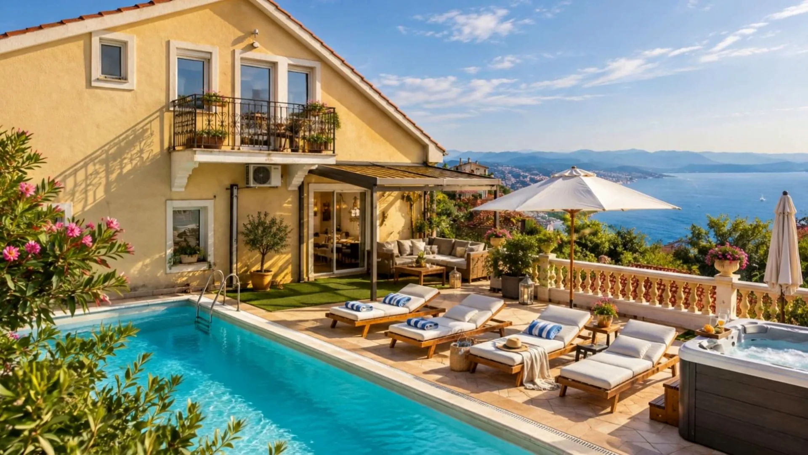
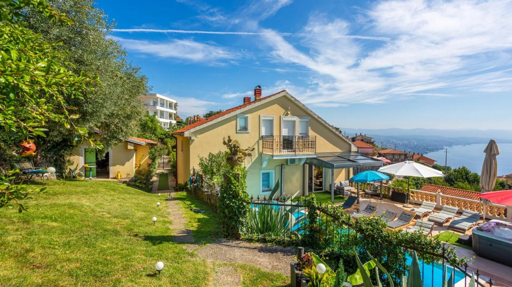
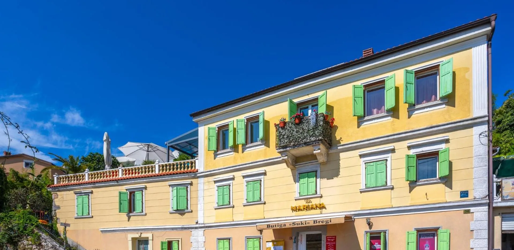
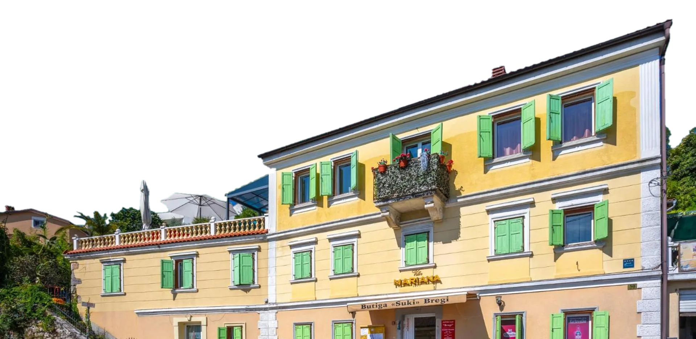
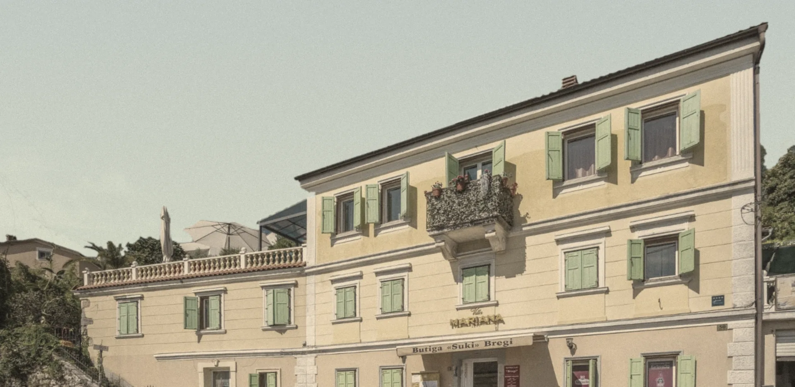

Soba s balkonom
- Krevet
- veliki bračni
- Prozor
- balkonska vrata prema vrtu i moru
- Još
- ugradbeni ormar, noćne lampe

Kuća iz 1877. u Bregima iznad Opatije, s bazenom, vrtom od 1500 m² i Kvarnerom pod prozorom.
Pošaljite upitPogled s prozora.Bazen, ležaljke i zaljev od Opatije do Rijeke.
Žuto pročelje, zelene škure i ime iznad vrata, kao što se gradilo kad je Opatija postajala ljetovalište. Iza kuće, na padini, vrt s bazenom i pogledom na cijeli zaljev.




Pročelje u Bregima, s imenom iznad seoske butige, kakvo je bilo i na starim razglednicama Opatije.
S ulice se ne vidi. Travnjak, masline, dvije sjenice, bazen s osam ležaljki, whirlpool i Kvarner preko balustrade.
Tri s velikim bračnim krevetom, jedna s dva odvojena. Tri kupaonice: dvije s tušem, jedna s kadom. Posteljina i ručnici su u cijeni.


Vrt je ograđen i velik koliko pet kuća. Svatko nađe svoj kut: djeca igralište, odrasli hlad, ljubimci travnjak.
Vrt i bazen u cijelosti
4 × 8 metara, osam ležaljki, suncobrani i pogled preko balustrade.

Na terasi uz bazen, pod crvenim suncobranom, s morem ispred.

Stakleni krov, lounge i lampice u nizu. Hlad za podne, zaklon kad pada kiša.

Drvene, sa stolom za cijelo društvo, u zelenilu između kuće i bazena.

Zidani, od kamena i opeke, s česmom i bačvom pokraj.

Ljuljačke, tobogan, pješčanik i autići. Uz to stolni tenis i stolni nogomet.

Klupa u hladu, staza od kamenih ploča i lampice za večer.
Dva dnevna boravka s kaminom, jedan u prizemlju i jedan pod krovom. Kuhinja s plinskim štednjakom, perilicom posuđa i aparatom za kavu, stol za osam i biljarski stol. Klima u sobama, Wi-Fi i satelitska televizija.

Lungomare, park Angiolina i plaže su na dva i pol kilometra. Gore, u Bregima, tiho je i navečer se vide svjetla cijelog zaljeva.